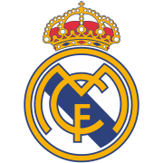
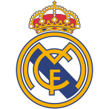
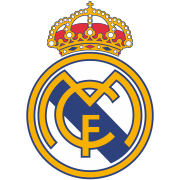
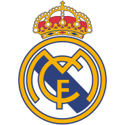

Powstał 6 marca 1902 r. Wygrał 35 ligowych tytułów
i 13 pucharów Ligi Mistrzów (drugi w klasyfikacji AC
Milan ma ich 2 razy mniej). Ten krótki przewodnik
pozwala na lepsze poznanie klubu i jego
legendarnej otoczki.
 
Przewodnik po klubie

Przewodnik po klubie

Przewodnik po klubie

Przewodnik po klubie